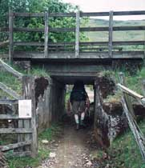

Inverarnan to Crianlarich - Monday, May 28
The other couple at breakfast were on their 13th walking of the West Highland Way! But our main memory of breakfast is the conversation with Frank, our host. He was very funny (sometimes ribbing us about what we had brought in our packs)! We set off happily, back across the river to re-join the Way. We talked a little with our penny whistle friends. These two women are both musicians, and had brought a penny whistle to play while they walked. We heard them off and on for several days, ahead of us or behind, as we passed or were passed by them on occasion. At one appropriate point, we heard behind us the penny whistle rendition of "The Grand Old Duke of York". They had stayed at the Drovers, but were glad that they were in the newer annex. It apparently was passable; the old building we were sure would not have been.
This section of the route goes up Glen Falloch, beside the River Falloch . There were pretty waterfalls and cascades down to our left. We were back in sheep grazing country, as well as cuckoo territory. We enjoy hearing cuckoos, although they're apparently rather nasty birds!
| We were excitedly anticipating the structure called a "sheep creep" in our guidebook. The book said it was "strenuous". Well, our imaginations had exceeded the actual reality. It was just a short passageway under the railway embankment, where you had to walk in a squatting position. If it had been much longer, it might well have been strenuous... |  |
After this we were again on one of the old military roads. After the 1715 uprisings, the English realized that they needed roads in order to have any success in pacifying the Scots. General Wade and Major Caulfield were the men most responsible for the roads, which were built from 1724 on, continuing after the 1745 rebellion. Since an important route was the one from Glasgow to Fort William, much of the West Highland Way uses what remains of these roads. They are usually stony tracks, though sometimes the stones have been covered with dirt and grass.
We said goodbye to our pennywhistle friends at the top of the two spur routes down to Crianlarich. It was the end of the bank holiday weekend, so they had to go back to work, and were taking the path directly down to the train station. We were also going down to Crianlarich, to spend the night, but Frank had told us that the more direct route to our B&B was down the Bogle Glen path.
We settled into our excellent guest house and then walked back into town. We had lunch at the "station tea room", shopped in the one little shop (where we ran into our threesome of Brits again), and managed to squander the afternoon doing very little. We enjoyed our dinner at the "Rod and Reel", and then all of us except Alida (who wanted to watch a movie on TV) played a board game in the lounge of the guest house.
| Next Day | Previous Day | Home Page |